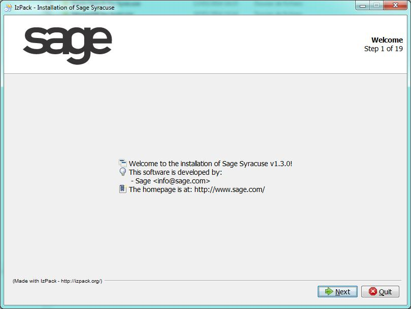
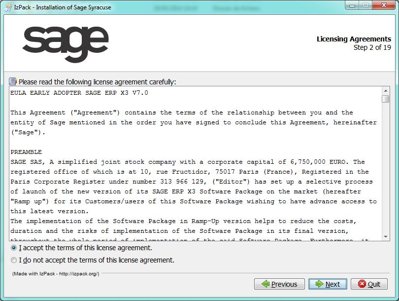
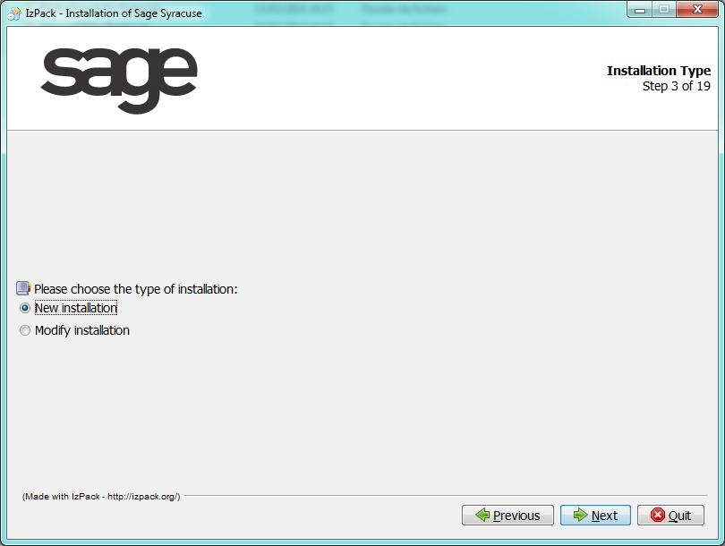
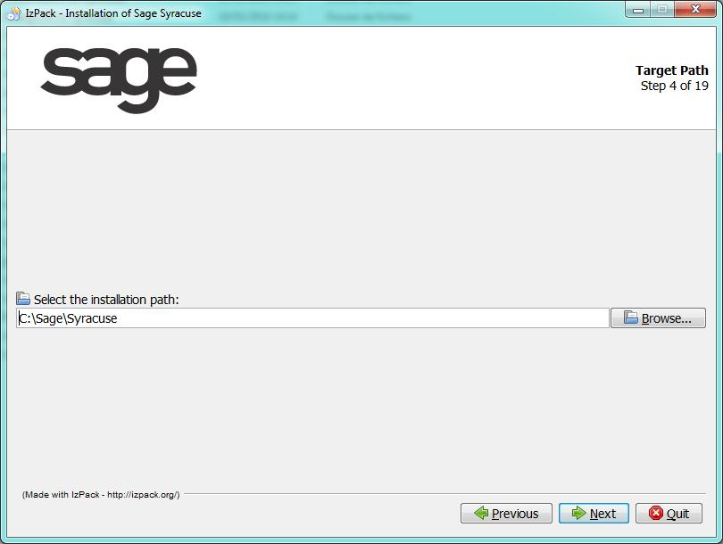
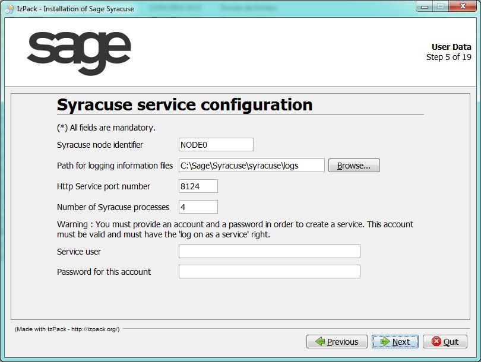
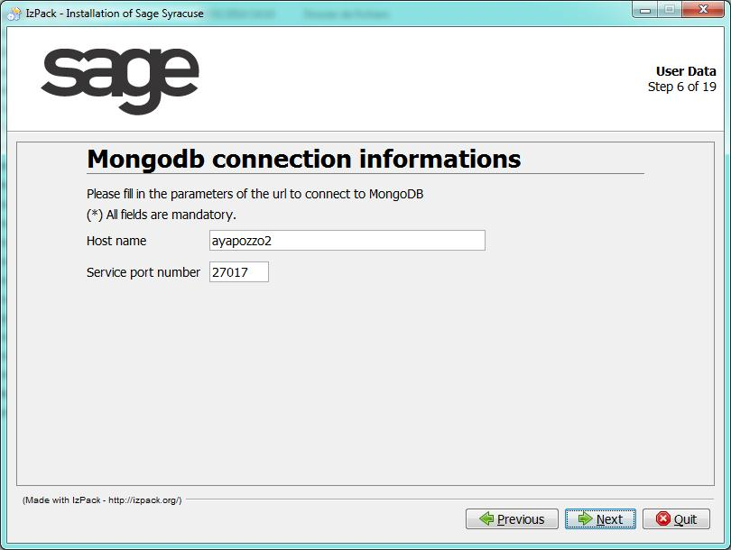
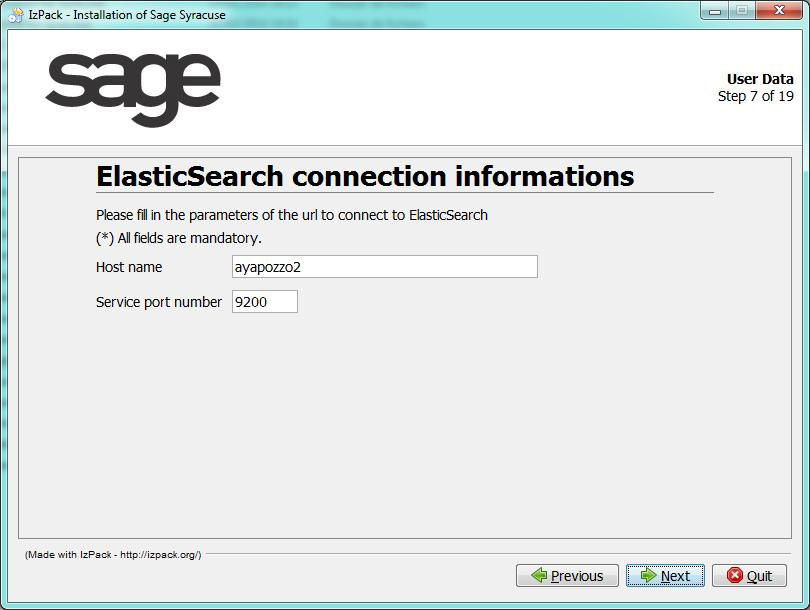

Node server installation procedure_7.0
The Sage X3 version 7 architecture is based on an administrationserver based on 'node.js'. This server acts as a proxy between the web clients and the Sage X3 server.
In the process of implementing Sage X3 version 7, the installation of the new web server takes place after having configured the Sage X3 solution with the configuration console.
This document describes the setup that installs the 'node.js' server and creates the configuration file in order to work with:
- The MongoDB database.
- The lucene / Elasticsearch services.
Prerequisites
Before launching the Version 7 installation, make sure that all the system requirements, CPU, RAM and space disk capacities that are mentioned in the Prerequisites section are met.
Also, make sure that software prerequisites are installed:
* MongoDB.
* Elasticsearch.
It is recommended to note the server name for MongoDB Database and Elasticsearch Engine and the corresponding port numbers that have been setup, and keep this information at hand while launching the Version 7 web server installation.
MongoDB
MongoDB (as defined by its editor) is an open source document database. Any version from 2.4 and later is compatible with the Version 7 web server.
It can be downloaded from http://www.mongodb.org/downloads, based on the procedure matching the operating system of the server http://doc.mongodb.org/manual/installation.
Elasticsearch
As defined by its editor, Elasticsearch is an open source, distributed real-time search and analytics engine for the cloud.
The DVD-ROM includes a folder for Elasticsearch easy installation of version number 0.90.2.
The installation procedure is the following:
* Execute the '.jar' file located in the SafeX3Elasticsearch directory
* Select the installation language: the izPack installation tool displays the first window. Select your installation language and click ‘OK’ to start the installation process.
Launching the node.js administration server installation
The DVD-ROM includes a folder named SafeX3Syracuse containing the Version 7 Web server setup program.
To launch the installation, execute the '.jar' file located in the SafeX3Syracuse directory.
The procedure steps are the following:
| Step | Purpose of the step | Page / Information entered |
|---|---|---|
| LAUNCH | When the jar file is executed, the installation is launched, and the following screen appears to select the language used for the installation procedure. | |
| 1 of 19 | The next window displays the Version 7 web server version number and the URL of the editor’s homepage. |

Click ‘Next’ to proceed to step 2. |
| 2 of 19 | Licensing agreement: The license file is shown on this window. | You must read and accept the terms of this license to proceed to the next step. |
| 3 of 19 | Installation type |

Two types of installation are available:
|
| 4 of 19 | Target path |

Indicate the installation path using the "Browse" button to change the proposed path by default. Click ‘Next’ to proceed to step 5. |
| 5 of 19 | Version 7 service configuration |

Select the "Configure Syracuse service" check box and enter an identifier for the administration node. Indicate the paths for "logging information files" using the "Browse" button if you need to change the default paths. Assign an available Http Service port number on your server and define the number of processes required, four processes are available by default. Assign a system account that will be used to run the service, and enter the corresponding password. This account needs to have then rights to log as a service, and must have an existing profile (but not a temporary profile).On UNIX, a user and a group have to be entered. Click "Next" to proceed to step 6. |
| 6 of 19 | MongoDB connection information |

Define the parameters for the connection to MongoDB. The following parameters are mandatory to create a connection to MongoDB:
Click ‘Next’ to proceed to step 7. |
| 7 of 19 | Elasticsearch connection information |

Define the web serverconnection to Elasticsearch. The following parameters are mandatory to create a connection to the Elasticsearch engine:
Click ‘Next’ to proceed to step 8. |
| 8 of 19 to 12 of 19 |
These steps are dedicated to the certificates installation. | The certificate management is defined in the Certificate installation documentation. |
| 13 of 19 | Select the Installation files | Select the optional installation files. Click ‘Next’ to proceed to step 14. |
| 14 of 19 | Summary Configuration Data | All settings you made on previous steps are presented as a log before performing the installation. Click ‘Next’ to proceed to step 15 and trigger the installation process. |
| 15 of 19 | Installation | Two progress bars are shown on this page indicating the installation progress. When this step is complete, click ‘Next’ to proceed to step 16. |
| 16 of 19 | Perform External Processes | This step starts by creating folders where the files are unpacked. A log shows gradually the performed processes. When this step is complete, the button ‘Next’ becomes active and then you can proceed to step 17. |
| 17 of 19 | Certificate finalization | This page summarizes the final steps to perform to install the certificate. It is described in the certificate finalization section. |
| 18 of 19 | Setup shortcuts | This step enables the creation of shortcuts in the start-menu. Select the corresponding check box(es) and choose whether these shortcuts should be available for all users. You can modify the default shortcut group name and select one of the proposed program groups for the shortcuts; otherwise, they will be created on the ‘All Programs’ menu folder. Click ‘Next’ to trigger the creation of shortcuts and proceed to step 19. |
| 19 of 19 | Installation finished | This page states that the installation has completed successfully, and indicates the folder where the uninstaller program has been created. You may generate an automatic installation script by clicking the corresponding button. Click “Done” to exit the installation program. |